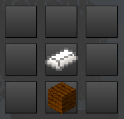
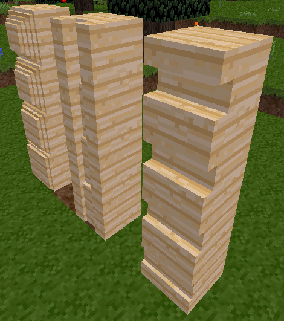

mychisel adds a chisel to Minetest. It is used to chisel grooves into blocks.
Simply craft a chisel and use it. Right click to get different modes.


A chisel that allows you to shape blocks. If technic mod is present the chisel will be rechargeable.
To craft a chisel just put a steel ingot and a brown wool in the crafting grid. The steel goes above the wool. (different recipe for technic device)
Once you have your chisel you can set the style by right clicking.
There are 5 styles to choose from(default) - horizontal groove - vertical groove - cross groves (this matches up with the vertical and horizontal grooves - square - 4 edges
Right click until you see the style you want in the chat then point at the node and left click. Each node can be cut 4 times. Each time you chisel the groove will get a little deeper.
Shift right click to change the supported mod. Here the list of supported mods: default (mychisel mod) 5 styles facade 10 styles
Only certain nodes can be chiseled. Here are the supported nodes
- Cobble
- Desert Cobble
- Stone
- Sandstone
- Desert Sandstone
- Silver Sandstone
- Stone Brick
- Sandstone Brick
- Desert Stone Brick
- Silver Sandstone Brick
- Clay
- Coal Block
- Apple Wood
- Acacia Wood
- Aspen Wood
- Pine Wood
- Jungle Wood
- Tin Block
- Bronze Block
- Copper Block
- Steel Block
- Gold Block
Thanks to Gundul for adding the chisel api. For mor info see the bottom of mychisel.
- Minetest Forum Link - My Chisel
- Github Link - Veiw Code
- Direct Download - mychisel.zip
- ContentDB - My Chisel